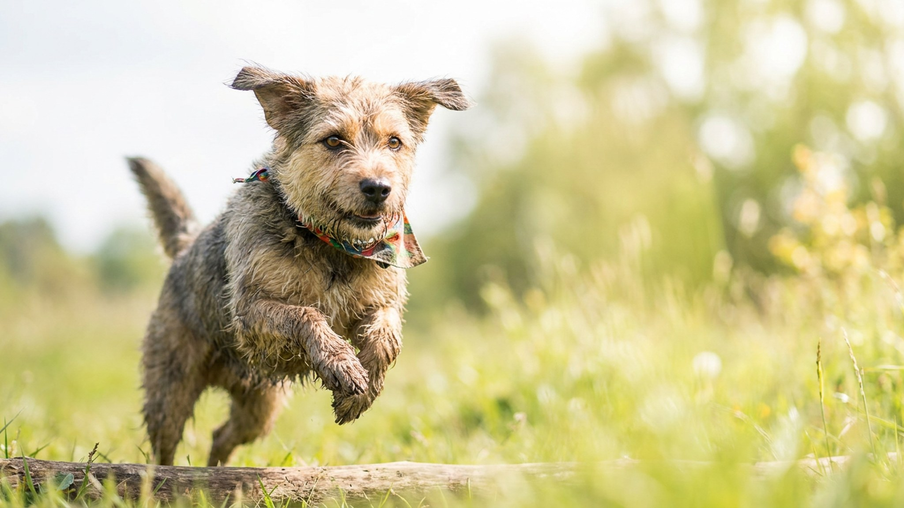

На осенней прогулке одна собака дрожит в лужах без всякого комбинезона, а другая задыхается в свитере при +15. Одежда для собак — не мода и не блажь: одним породам она правда нужна, другим откровенно мешает. Разбираемся, кому комбинезон помогает, кому вредит, как подобрать размер и приучить носить без боёв.
🐾 Заведите дневник ухода за собакой
Вес, шерсть, обработки, прививки — всё в одном месте. А если что-то смущает, AI-ветеринар ответит круглосуточно и бесплатно.
Завести дневник → Завести в MAX →
У вас iPhone? AnimaLife есть в App Store
Собаки греются шерстью и подшёрстком, и тут они очень разные. Комбинезон или свитер оправдан для:
Сигналы, что псу холодно: дрожь, поджатый хвост, попытки развернуться домой, поднятые по очереди лапы.
Северным и густошёрстным породам одежда чаще мешает, чем помогает:
Правило простое: одежда решает задачу (холод, дождь, защита), а не украшает.
Плохо подобранная одежда хуже, чем никакой. Снимите три мерки:
Выбирайте дышащие материалы, без мелких деталей, которые пёс может отгрызть и проглотить.
Осенью и зимой лапам достаётся больше, чем спине. Дорожные реагенты и соль раздражают подушечки и межпальцевые складки, а собака потом слизывает их с лап. Обувь имеет смысл не всем: многим собакам достаточно вымыть и просушить лапы после прогулки, а мелким и короткошёрстным — ещё и защитить от холодного асфальта. Если берёте ботинки, приучайте к ним так же постепенно, как к одежде, и проверяйте, что они не сваливаются и не мешают походке. Простая альтернатива — защитный воск или крем для подушечек перед выходом.
Многие собаки сначала замирают или «складываются» в одежде — это нормально. Приучайте постепенно:
Материал носит информационный характер и не заменяет очную консультацию ветеринара.
🐾 Чтобы уход не держать в голове
AnimaLife напомнит, когда стричь когти, вычёсывать, купать и обрабатывать от паразитов, и заведёт дневник по вашему питомцу. Бесплатно.
Настроить напоминания → Настроить в MAX →
У вас iPhone? AnimaLife есть в App Store
🐾 Понравился разбор?
Подпишитесь на канал — каждый день разбираем по одному тревожному симптому у кошек и собак: что в пределах нормы, а когда пора к врачу. Подпишитесь, чтобы не пропустить разбор, который может спасти здоровье вашего питомца.